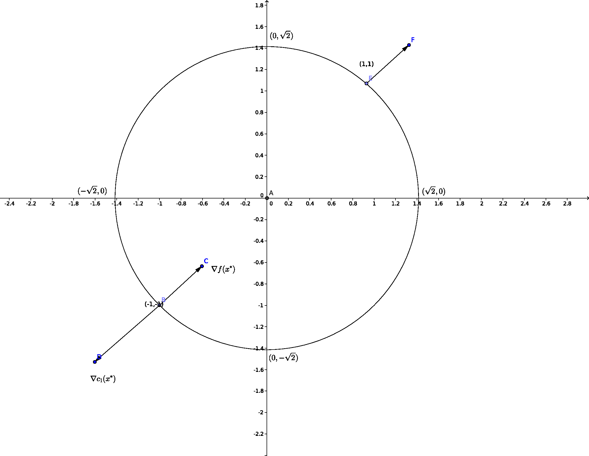

The general formulation of the constrained optimization problem is:
\begin{align*} && \min_{\bx \in \mathbb{R}^n} f(\bx)\\ \\ \text{subject to } && c_{i}(\bx) = 0 && i \in \mathcal{E} &&& \text{equality constraint}\\ && c_{i}(\bx) \geq 0 && i \in \mathcal{I} &&& \text{inequality constraint} \end{align*} Feasible set: \begin{align*} \Omega = \{\bx | c_{i}(\bx) = 0, \; i\in \mathcal{E} ,\; c_{i}(\bx) \geq 0 , \; i \in \mathcal{I}\} \end{align*} For a circle of radius \(c\) \begin{align*} c_{1}(\bx) = -x_{1}^{2} - x_{2}^{2} +c^{2} , \;\; c_{1}(\bx) \geq 0 \end{align*} \(\Omega :\) all the points inside the circle of radius \(c\) including the perimeter.\\
Characterized Solution
Optimality Conditions
\begin{align*} f(\bx^{*}) < f(\bx) &&&\underline{\bx} \in \mathcal{N}(\bx^{*})\\ &&&\underline{\bx} \in \Omega\\ &&&\bx \in \Omega\\ &&&\bx \in \mathcal{N}(\bx^{*})\\ &&&\bx,\bx^{*} \in \Omega \end{align*}
Active Set A(x): (Check Definition)
\begin{align*} A(\bx)=\mathcal{E} \cup \{ i \in \mathcal{I} \hspace{0.2cm} | \hspace{0.2cm} c_{i}(\bx)=0\} \end{align*} Set of indices for which inequality constraints are active + equal indices.
Example 1: Single Equality Constraint
\begin{align*} \min_{\bx \in \mathbb{R}^2} &&& x_{1} + x_{2}\\ \\ \text{subject to} &&& x_{1}^{2} + x_{2}^{2} - 2 = 0 &&\\ \\ f(\bx) = x_{1} + x_{2} && \mathcal{I} = \phi \text{ , } \mathcal{E} = \{ 1 \} \end{align*} At the solution :  \begin{align*} \nabla f \hspace{0.2cm} || \hspace{0.2cm} \nabla c_{1} \end{align*} \begin{align*} \nabla f(\bx^{*}) = \lambda_{1}^{*} \nabla c_{1}(\bx^{*}) \end{align*} Is that always True? \begin{align*} \bx \in \Omega \text{ , } c_{1}(\bx) = 0 \end{align*} We take a small step \(\bs\) \begin{align*} c_{1}(\bx+\bs) = 0 \end{align*} Taylor Series approximation: \begin{align*} &c_{1}(\bx) + \nabla c_{1}(\bx)^{T} \bs = 0\\ &\text{Since } c_{1}(\bx) = 0 \\ &\nabla c_{1}(\bx)^{T} = 0 \end{align*} We want decrease in f \begin{align*} f(\bx+\bs) &< f(\bx)\\ f(\bx) + \nabla f(\bx)^{T} \bs &< f(\bx) \end{align*} First Order Conditions: \begin{align*} &\nabla f(\bx)^{T} < 0\\ &\nabla c_{1}(\bx)^{T} < 0 \;\; \& \;\; \nabla f(\bx)^{T} < 0 \end{align*} If no \(\bs\) exist that satisfy the above 2 conditions, then \(\bx\) is \(\bx^{*}\) \begin{align*} \nabla c_{1} || \nabla f \text{ , } \nabla f(\bx^*) = \lambda_{1} \nabla c_{1}(\bx^*) \end{align*} Lagrangian Function: \begin{align*} \mathcal{L}(\bx,\lambda_{1}) = f(\bx) - \lambda_{1} \nabla c_{1}(\bx)\\ \nabla \mathcal{L} = \nabla f - \lambda_{1} \nabla c_{1} = 0 \end{align*} At the solution \(\bx^{*}\), there is a scalar \(\lambda_{1}^{*}\) such that: \begin{align*} \nabla_{\bx} \mathcal{L}(\bx^{*},\lambda^{*}) = 0 \end{align*}
Example 2: Single Inequality Constraint
\begin{align*} \min_{\bx \in \mathbb{R}^2} &&& x_{1} + x_{2} &&&\\ \\ \text{subject to } &&& 2 - x_{1}^{2} - x_{2}^{2} \geq 0 &&& \end{align*} \(\bs\) decrease: \begin{align*} \nabla f(\bx)^{T} \bs < 0 \text{ , } \nabla c^{T}\bs = 0 \end{align*} \(\bs\) feasibility: \begin{align*} c_{1}(\bx+\bs) \hspace{1.5cm} &\geq 0\\ c_{1}(\bx) + \nabla c_{1}^{T}(\bx) \bs \hspace{0.2cm} &\geq 0 \end{align*}
Case: 1
x is completely inside the feasible region If \nabla f(x) \neq 0, we can set: \begin{align*} \textit{S} = -\alpha \nabla f(\bx) \end{align*}
"Steepest Descent Direction"
Case: 2
\begin{align*} c_{1}(\bx) + \nabla c_{1}(\bx)^{T} \bs &\geq 0 \text{ , } c_{1}(\bx) = 0\\ \nabla c_{1}(\bx)^{T} &\geq 0\\ \nabla f(\bx)^{T} \bs &< 0 \end{align*} \begin{align*} \nabla f || \nabla c_{1} \text{ , } \nabla f = \lambda_{1} \nabla c_{1} \text{ , } \lambda_{1} \geq 0 \end{align*} \begin{align*} \lambda_{1} c_{1}(\bx) = 0 \end{align*} If \(c_{1}(\bx) = 0 \) then \(\lambda_{1} > 0\) If \(c_{1}(\bx) \neq 0\) then \(\lambda_{1} = 0\)
Case: 1
\begin{align*} \min_{\bx \in \mathbb{R}^m} f(\bx) - \lambda_{1} c_{1}(\bx)\\ \lambda_{1} > 0\\ \\ \text{minimizer} \mathcal{L}(x,\lambda_{1})\\ \lambda_{1}^{*} \geq 0\\ \lambda_{1}^{*}c_{1}(\bx^{*}) = 0 \end{align*}
\begin{align*} \mathcal{L} = f - \lambda_{1}c_{1} - \lambda_{2}c_{2} \end{align*} \(\nabla \mathcal{L} = 0\), for some \(\lambda^{*} \geq 0\) \begin{align*} \lambda_{1}^{*} \geq 0 \\ \lambda_{2}^{*} \geq 0 \end{align*} Complimentary conditions: \begin{align*} \lambda_{1}^{*} c_{1}^{*} = 0\\ \lambda_{2}^{*} c_{2}^{*} = 0 \end{align*} First Order Optimality condition of the KKT Conditions. Suppose \(\bx^{*}\) is a local solution \(\&\) f, \(c_{i}\) are smooth \(\&\) Constraints should satisfy same "qualification", then there is a Lagrange multiplier vector \(\lambda^{*}\) , with component \(\lambda_{i}^{*}\), \(i \in \mathcal{E} \cup \mathcal{I}\) such that the following conditions are satisfied. \begin{align*} \nabla_{x} \mathcal{L}(x^{*},\lambda^{*}) = 0 \end{align*} \begin{align*} c_{i}(x) = 0 &&&\forall \text{ } i\in \mathcal{E}\\ c_{i}(x) \geq 0 &&&\forall \text{ } i\in \mathcal{I}\\ \lambda_{i}^{*} \geq 0 &&&\forall \text{ } i\in \mathcal{I}\\ \lambda_{i}^{*} c_{i}(x^{*}) = 0 &&&\forall \text{ } i\in \mathcal{E} \cup \mathcal{I} \end{align*}
Difference between Polyhedra and polytope.
The feasible set is a polytope, a convex, connected
set with flat, polygonal faces.
Look at Linear Programming from NPTEL: Shirish Shivade.
Todo: Examples of Feasible regions.
Todo: Definition of a corner point (extreme point).
The Simplex Method requires that the problem is reduced to the following standard form before we apply the
algorithm.
\begin{align*}
\text{min } & \bc^T \bx\\
\text{subject to } & \bA \bx = \bb \text{ , } \bx \geq \bze
\end{align*}
where \(\bc \in \mathbb{R}^n\), \(\bx \in \mathbb{R}^n\), \(\bb \in \mathbb{R}^m\) and \(\bA \in \mathbb{R}^{m
\times n}\).
We will be able to convert any kind of Linear Program to this form.
Here rows of \(\bA\) has the co-efficients of respective variables the constraints, and the \(\bb\) has the
right
hand side constant. So we have \(m\) constraints and \(n\) variables. Notice that the standard form only works
with equality constraints, so slack variables are used to be able to solve problems with inequality
constraints.
KKT conditions here with LICQ. LICQ not done.
The Lagrangian function for the problem is given by:
\begin{align*}
\mathcal{L}(\bx, \lambda, \bs) = \bc^T \bx - \lambda^T (\bA \bx - \bb) - \bs^T \bx
\end{align*}
Here \(\lambda \in \mathbb{R}^m\) is the multiplier for the equality constraints and \(\bs \in \mathbb{R}^n\)
is
the
multiplier for the bounded constraints.
First order necessary conditions from theory of constrained optimization are wriiten as follows:
\begin{align*}
\bA^T\lambda + \bs = \bc\\
\bA \bx = \bb\\
\bx \geq \bze\\
\bs \geq \bze\\
x_i s_i = 0 \text{ , i = } 1, 2, ..., n
\end{align*}
Since the standard form deals only with the minimization problem, we must have a method to convert a
maximization problem to the standard form. This is done by solving the dual problem.
The primal and the dual, both have the same solution.
Why does the solution lie on the extreme points?
How to go from one corner point to the other. Which is the direction of decrease of objective function.
We can also cite